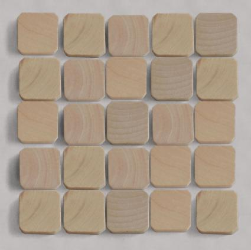
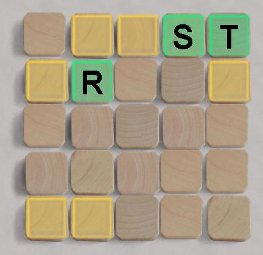
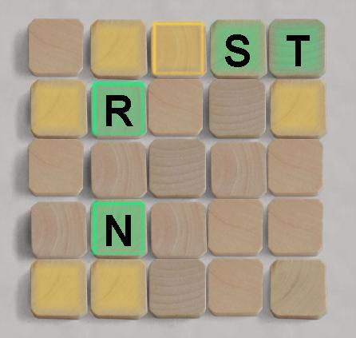
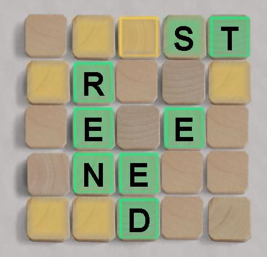
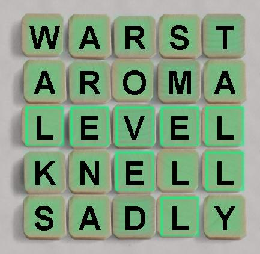

|
|
|
|  The grid starts empty. The solution is a completely filled crossword, with no blank squares. |
 Suppose the first probe word is TRASH. The R S and T squares become green, the framed yellow squares contain one of T-R-A-S-H but not in that position. |  Suppose the second proble word is BRING. The N and R sqares are correct for this word, and the center-top square also contains B-R-I-N-G, but not in that position. The other yellow and green squares without the bright frames are not selected by BRING. |
|  Suppose the third probe word is TREND. All the framed green words are correct and in position for this word. The S is not selected by this word. The framed yellow square at the top-center also contains T-R-E-N-D but not in that position. The unframed yellow and green squares are not selected by TREND. |  Guesses continue until the entire grid is filled in. All the elements are real words from the zyzzva scrabble dictionary. | Other information about the construction:
|
| Go to BoardSpace.net home page |